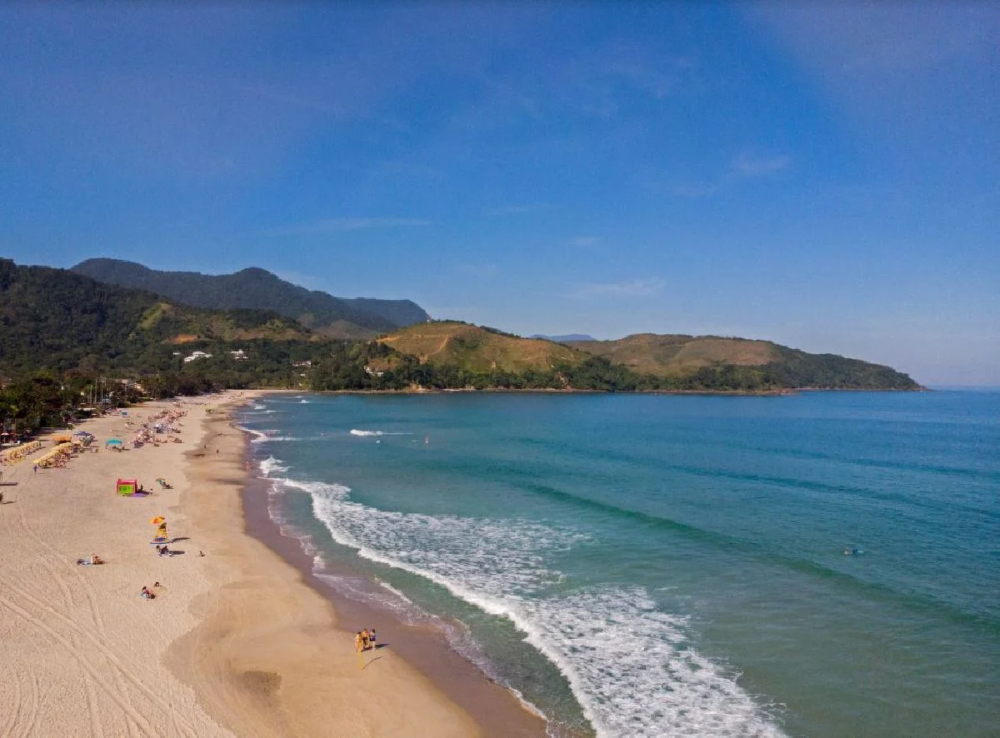
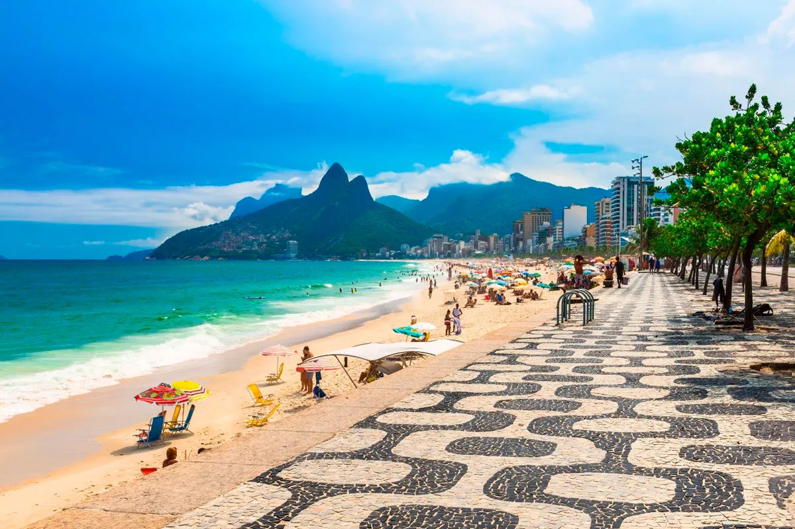
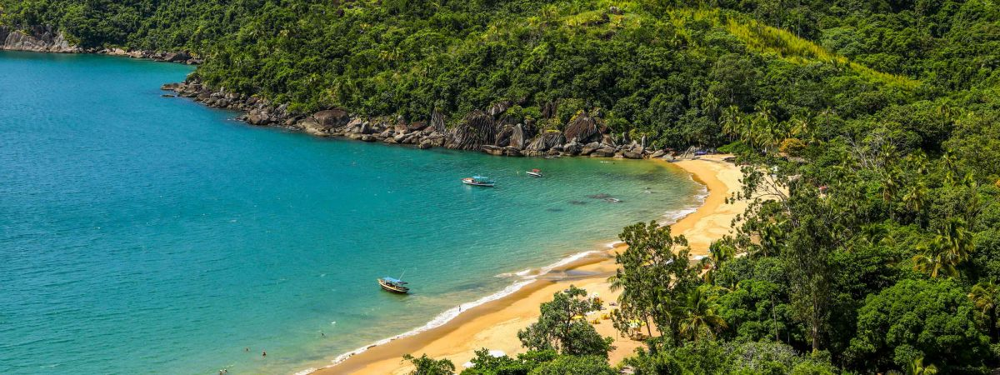

O Brasil é um dos países tropicais conhecidos pelas praias mais bonitas do planeta. Confira as melhores
praias para esse verão.
Jericoacoara
Jericoacoara é uma praia localizada na vila homônima, no município de Jijoca de Jericoacoara, no estado do
Ceará, no Brasil. Está localizada a 295 km a oeste da capital do estado, Fortaleza. Foi eleita em 1994 pelo
jornal estadunidense The Washington Postuma das dez praias mais bonitas do planeta.Em 2014,
foi eleita pelo Huffington Post a quarta melhor praia da Terra.É um dos locais mais frequentados por
praticantes de windsurfe no país. A praia é parte integrante do Parque Nacional de Jericoacoara.
Atrações:
Pedra Furada.
Duna do Pôr do Sol.
Igreja Nossa Senhora.
Serrote.
Farol de Jericoacoara.
Campo das Dunas.
Praia do Farol
Grande estrela de Arraial do Cabo, a Praia do Farol é uma das mais belas de toda a Região dos Lagos e, sem
exageros, de todo o Brasil. Ela ganhou fama especialmente por ter sido classificada pelo INPE
(Instituto Nacional de Pesquisas Espaciais) como uma das mais perfeitas praias do país, seguindo critérios
de pureza da água, qualidade da areia e paisagem. A fama se espalhou e hoje a Praia do Farol é um dos
passeios imperdíveis em Arraial do Cabo.
Atrações:
Fenda de Nossa Senhora de Assunção.
Gruta Azul.
Prainhas do Pontal do Atalaia.
Pedra Perfil do Gorila.
Arraial Do Céu
Mirante do Pontal do Atalaia.
Maresias

Essa praia brasileira é conhecida mundialmente por ser palco de campeonatos de surf além de oferecer
ondas de diferentes tamanhos, o que é ideal para os profissionais e novatos também.Inclusive o campeão
mundial de surf Gabriel Medina, nasceu e fez escola no local. A praia também oferece uma boa opção
para os banhistas devido à sua extensão de cinco quilômetros de areia branca e mar cristalino.
Atrações:
Trilha do Oleoduto.
Beco da Mulher Maravilha.
Canto da Barra.
Canto do Moreira.
Praia de Ipanema

O bairro de Ipanema é conhecido pelo Tropicalismo, pela Bossa Nova e pela beleza da mulher brasileira
imortalizada na música “Garota de Ipanema”, de Tom Jobim e Vinicius de Moraes. A praia, vizinha do Arpoador
e da Praia do Leblon, é uma das preferidas para a prática de esportes. Das areias brancas, você vê o Morro
Dois Irmãos, onde o sol se põe muitas vezes entre o mar e a montanha, sob aplausos de cariocas e turistas.
Atrações:
Casa de Cultura Laura Alvim.
Praça Nossa Senhora da Paz.
Mirante da Paz.
Mirante 2 do Arpoador.
Parque Garota de Ipanema.
Ilha Bela

Ilhabela fica no Litoral Norte e é conhecida por ser o único município-arquipélago marinho do país. Em
geral, esse arquipélago é formado por 19 ilhas, ilhotas e lajes, como as ilhas de São
Sebastião, dos Búzios e da Vitória.
Atrações:
Cachoeira do Veloso.
Trilha para a Cachoeira do Gato.
Ilha das Cabras.
Centro Histórico de Ilhabela.
Cuidados no Verão
Todos nós queremos curtir as férias de verão da melhor forma possível. Fique ligado e siga aa dicas a seguir.
Use protetor solar com fator de proteção adequado (FPS 30 ou mais) e reaplique a cada 2
horas, especialmente após entrar na água. A exposição prolongada ao sol pode causar queimaduras,
precoce e aumentar o risco de câncer de pele.
Beba bastante água para manter-se hidratado, já que o calor intenso pode levar à desidratação. Evite
consumir apenas bebidas alcoólicas, pois elas podem acelerar a desidratação.
Algumas praias possuem correntes fortes que podem arrastar nadadores para o mar aberto. Fique atento
às bandeiras de sinalização e sempre nade em áreas supervisionadas por salva-vidas.
Evite o sol entre 10h e 16h, quando os raios ultravioleta (UV) são mais intensos. Se estiver na
praia nesse período, busque sombra e use acessórios de proteção, como chapéus, óculos escuros e
roupas leves.
Coma alimentos leves e frescos. Evite comidas de origem duvidosa ou mal conservadas, pois o calor
pode acelerar a deterioração e causar intoxicações alimentares.
Esses cuidados garantem maior segurança e conforto durante os dias de praia no verão.
Cuidados com as Crianças
Levar as crianças para a praia no verão é uma ótima maneira de aproveitar o sol e o mar, mas é importante
seguir pelo alguns cuidados para garantir a segurança e o bem-estar dos pequenos.
Proteção solar:Evitar a exposição ao sol entre 10h e 16h e aplicar protetor solar com
filtro 50. Bebês até 6 mesesnão podem usar protetor solar, por isso é preciso redobrar a
atenção com os horários de exposição ao sol.
Hidratação:Aumentar a ingestão de líquidos, como água, suco de frutas e água de coco
Acessórios de Proteção:Os acessórios, como bonés, roupas com fotoproteção, chapéus e
outros, ajudam em casos de crianças que não podem usar protetor solar e nem repelentes. Além
disso, protege regiões sensíveis, como olhos, rosto e nuca.
Pacotes de Viagens
Abaixo trazemos sugestões de principais empresas para comprar seu pacote de viagens. Lembre-se verifique
antes a reputação da empresa, não nos responsabilizamos por golpes. Reserve sua viagem com atecedência e
economize.
Clique noa ícones e confira as promoções
Criadores do site
Este site foi produzido por alunos do curso de Desenvolvimento JS do SENAI. Abaixo está a localização da
unidade em que ocorreu o curso.